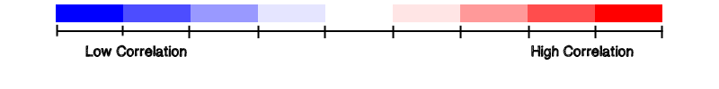

Where and how should the vaccine be deployed to achieve the greatest impact?
Based on data obtained on other diseases the team was able to compile and correlate what countries would be the best locations to begin a vaccination. The graphic below is an interactive map of the world that displays countries color coded by where an Ebola vaccine would have an impact. A country with a high correlation is marked by a saturated red color and means that this is an area where the vaccine would have a greater positive impact on the spread of Ebola. A low correlating country will be filled with a deeper blue and this is an area where a vaccine will have minimal to no influence on the spread of the disease. A country where substantial data has not been gathered will be displayed as a black.
What does the correlation mean?
The correlation values in this graphic measures the relationship between all countries that are associated with significant data. Upon gathering the data the team computed a large correlation matrix showing how likely it is for a disease to show up in an area based on places it was reported the previous year. This data was then normalized based on immunization rates to show what places will spread diseases the fastest. These are then the places that vaccinations should be concentrated on.
